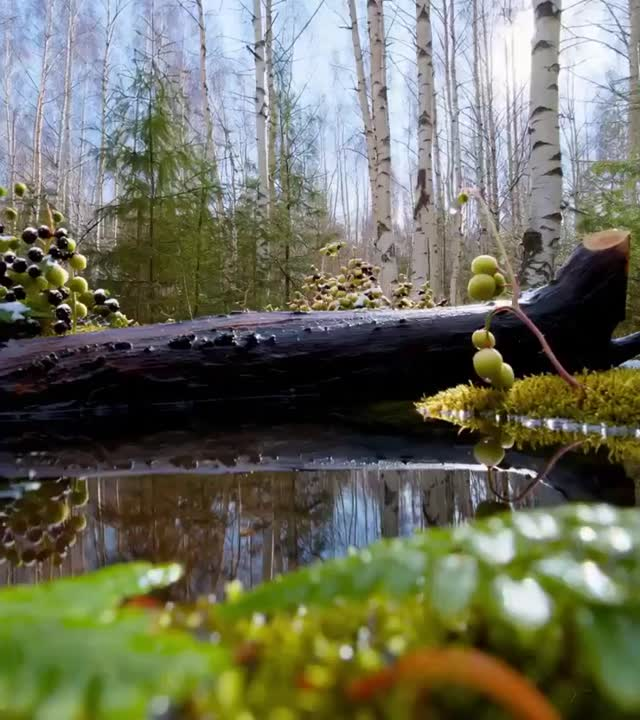

Algunos proyectos de ReVive©

Sierra del Fraile, Biar
Sierra en la que plantamos numerosos árboles tras un incendio debastador y reinsertamos a varias especies.

Río de Anna, Anna
Río que limpiamos exaustivamente y desinfectamos para reinsertar a varias especies.

Riu Xúquer, Jarafuel
Río que repoblamos debido a una excasez de peces de una especie en concreto tras una gran riada.